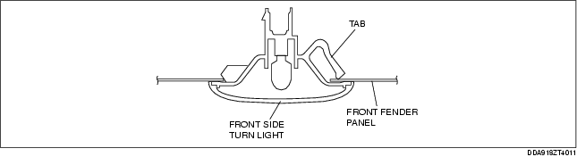

FRONT SIDE TURN LIGHT CONSTRUCTION
id091800107000
• Installed on the right and left side front fender panels by engaging the drum housing tabs.
• The front side turn light valve is integrated with the front side turn light. (Valve cannot be replaced. For the valve replacement, replace the front side turn light.)
